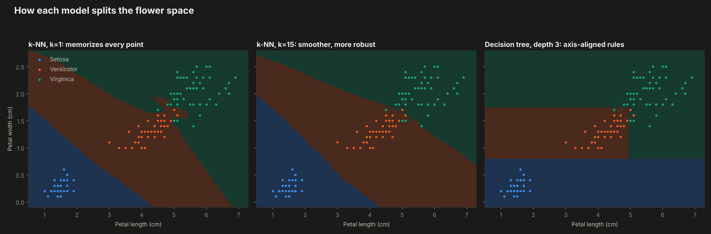
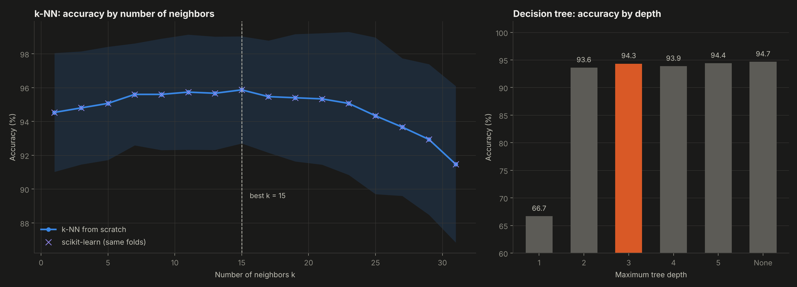
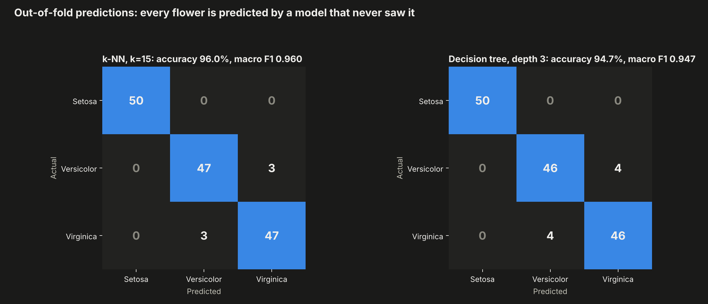
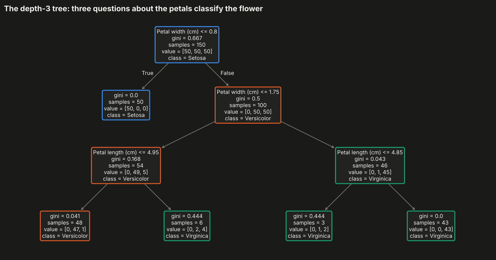

k-nearest neighbors implemented from scratch and decision trees, evaluated with repeated stratified cross-validation on the 150 flowers of Fisher's Iris dataset.
Drag to rotate. Translucent shapes are the convex hull of each species; white rings mark the flowers k-NN gets wrong.
Same two petal measurements, three models.

Repeated stratified 5-fold cross-validation (50 test folds per point).

Out-of-fold predictions.

Every split, its Gini impurity and the samples that reach it.

Hover for quartiles.